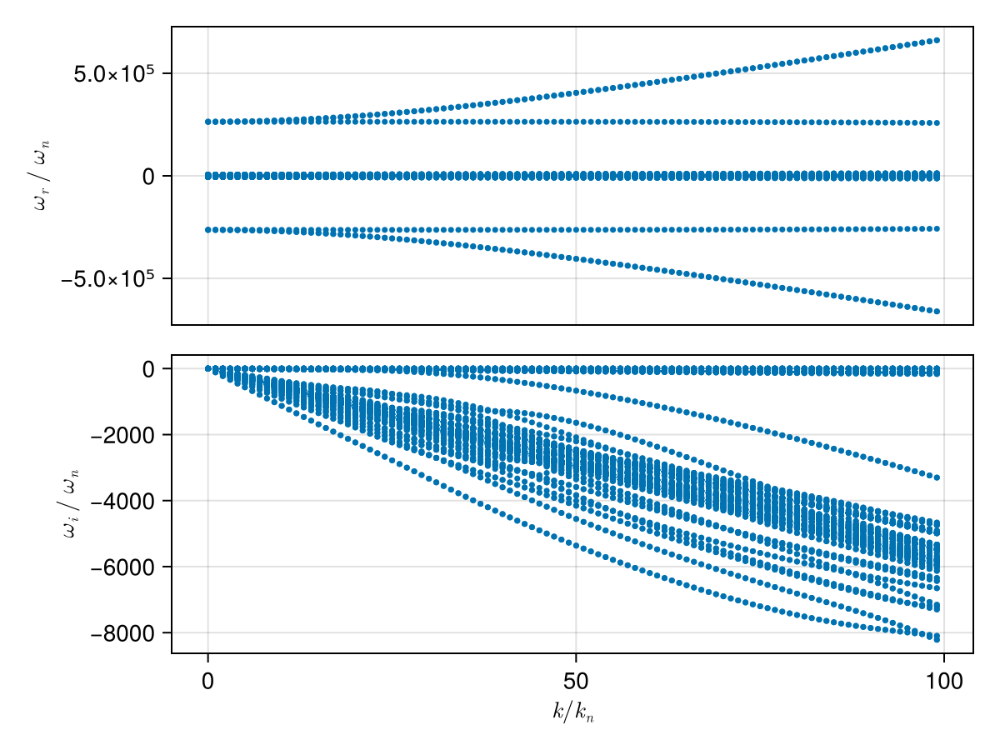
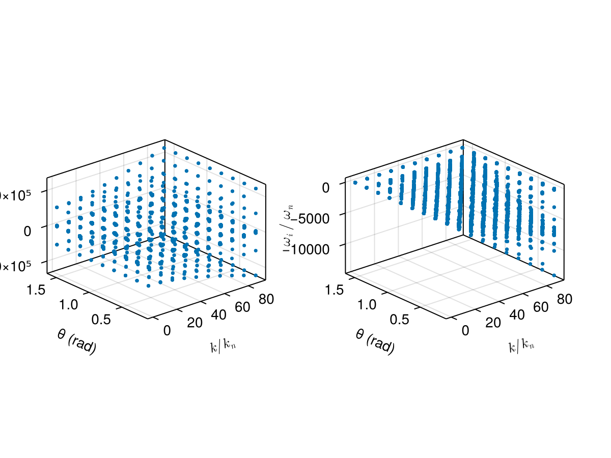
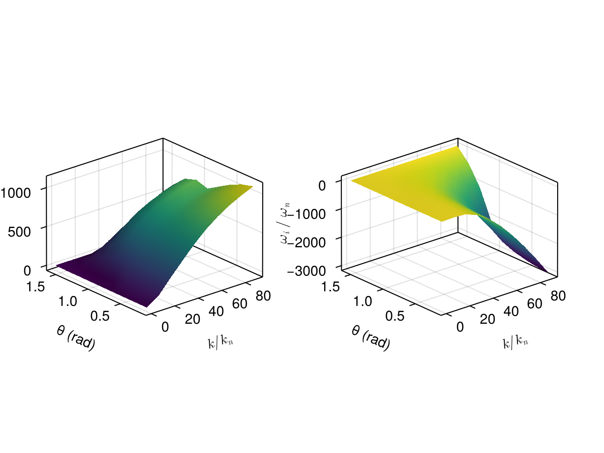

Case: Dispersion surface tracking (2D scan)
This page demonstrates how to construct a dispersion surface by scanning a 2D parameter space (wave number k and propagation angle θ) and using branch tracking to follow a consistent mode across the scan.
We consider a typical electron–proton plasma and scan:
kin normalized unitsk/k_n, wherek_n = ω_pi/cθfrom 5° to 90°
using PlasmaBO
using PlasmaBO: c0
B0 = 5e-9 # [Tesla]
n = 5.0e6
T = 12.94
ion = Maxwellian(:p, n, T)
electron = Maxwellian(:e, n, T)
species = (ion, electron)
wn = abs(B0 * ion.q / ion.m)
wpi = plasma_frequency(ion.q, n, ion.m)
kn = wpi / c0
wci = wn
# Kinetic solver settings (adjust upward for accuracy)
N = 33Dispersion Curve Scan
julia> using CairoMakiejulia> θ = deg2rad(45);julia> k_ranges = (0.01:1:100) .* kn;julia> results = solve(species, B0, k_ranges, θ; N)Solving dispersion (k, θ)... 9%|██▏ | ETA: 0:00:10 Solving dispersion (k, θ)... 47%|██████████▊ | ETA: 0:00:02 Solving dispersion (k, θ)... 81%|██████████████████▋ | ETA: 0:00:01 Solving dispersion (k, θ)... 100%|███████████████████████| Time: 0:00:03 PlasmaBO.DispersionSolution{StepRangeLen{Float64, Base.TwicePrecision{Float64}, Base.TwicePrecision{Float64}, Int64}, Float64, Matrix{Vector{ComplexF64}}}(9.81977277497953e-8:9.819772774979531e-6:0.0009722557024507233, 0.7853981633974483, Vector{ComplexF64}[[-126621.46687532145 - 6.652304607279435e-12im, -126181.23357016458 + 1.33147228459137e-10im, -125742.5358474724 + 2.159096720993535e-11im, -2638.5615125116274 - 0.2408707498507389im, -2638.5615125116133 - 0.24087074985059764im, -2638.5615125116065 - 0.24087074985129675im, -2638.4470794029817 - 0.2651185849436014im, -2638.447079402972 - 0.265118584941888im, -2638.447079402965 - 0.2651185849428566im, -2638.354345226284 - 0.2802846465865928im … 2638.3543452262984 - 0.28028464658613483im, 2638.447079402962 - 0.26511858494193374im, 2638.4470794029826 - 0.2651185849418228im, 2638.447079403005 - 0.265118584943455im, 2638.5615125115987 - 0.24087074985045673im, 2638.561512511613 - 0.24087074985161644im, 2638.5615125116224 - 0.24087074985333556im, 125742.5358474727 + 8.45473026729978e-12im, 126181.23357016464 - 1.0172893928390442e-10im, 126621.46687532112 - 2.2664286730868363e-11im]; [-126647.93289248481 - 1.5553158760894803e-10im, -126198.78018484515 - 2.202067102711208e-9im, -125768.49400451663 + 8.296857645362365e-11im, -2671.7111478482984 - 24.32794573495254im, -2671.711147848287 - 24.327945734953637im, -2671.7111475953243 - 24.327946383221192im, -2660.1534038758336 - 26.776977079148878im, -2660.1534038758305 - 26.77697707914979im, -2660.153393709819 - 26.77696518560346im, -2650.7873334602964 - 28.308737350696376im … 2650.7873334602955 - 28.3087373506963im, 2660.153393709816 - 26.776965185602972im, 2660.1534038758164 - 26.776977079149596im, 2660.15340387582 - 26.776977079149im, 2671.7111475953184 - 24.327946383220933im, 2671.711147848305 - 24.327945734953502im, 2671.71114784831 - 24.32794573495277im, 125768.49400451634 + 1.600536400583153e-10im, 126198.78018484818 + 9.219400838212809e-10im, 126647.93289248498 - 8.331541670779358e-11im]; … ; [-313940.64254257845 - 4.560460026785365e-8im, -313861.5464174453 - 4.9698925373499807e-8im, -123618.2303671695 - 2.452408440827217e-5im, -5887.2257755071105 - 2360.7742192898363im, -5887.056696386652 - 2360.9532339550988im, -5774.271214584509 - 2344.216598344495im, -5223.73449115578 - 2588.8106209917173im, -5109.542451363687 - 2214.224837475221im, -5007.815770121026 - 2360.77421928986im, -5006.872705233747 - 2361.6957751309615im … 5006.872705233761 - 2361.6957751309474im, 5007.815770121007 - 2360.7742192898268im, 5109.542451363684 - 2214.22483747522im, 5223.734491155726 - 2588.8106209917237im, 5774.27121458455 - 2344.2165983445134im, 5887.056696386651 - 2360.953233955103im, 5887.2257755070905 - 2360.7742192898486im, 123618.23036716996 - 2.452510546279809e-5im, 313861.5464174445 - 4.9823938752524555e-8im, 313940.6425425784 - 4.5781959556734364e-8im]; [-316611.4691783675 - 3.805619840527928e-8im, -316532.82752609794 - 5.786664980270261e-8im, -123505.5549590051 - 2.5916066673869913e-5im, -5920.375410843759 - 2384.8612942749505im, -5920.198173900934 - 2385.0485721136365im, -5802.211344747979 - 2366.079352138588im, -5259.865772167307 - 2621.3752889475727im, -5147.1718368239635 - 2234.9495259728396im, -5040.965405457724 - 2384.861294274962im, -5039.996688056827 - 2385.806051307269im … 5039.996688056836 - 2385.806051307267im, 5040.9654054577 - 2384.8612942749496im, 5147.171836824006 - 2234.949525972844im, 5259.865772167393 - 2621.37528894756im, 5802.211344747973 - 2366.0793521385967im, 5920.198173900902 - 2385.048572113642im, 5920.375410843848 - 2384.861294274961im, 123505.55495900466 - 2.5914069374569145e-5im, 316532.8275260983 - 5.744095687987283e-8im, 316611.46917836706 - 3.7763626892228785e-8im];;])
plot(results, kn, wn)
using PlasmaBO: plot_branches
# k, ω pairs for initial branch points (see `BranchPoint` for more control over tracking)
initial_point = (50 * kn, -600 * wn *im)
branch = track(results, initial_point)
f, (ax1, ax2) = plot_branches((branch,), kn, wn)
ylims!(ax2, -3500,500)
f
Dispersion Surface Scan (2D)
julia> ks = (0.1:10:100.0) .* kn;julia> θs = deg2rad.(10.0:10.0:90.0);julia> res2d = solve(species, B0, ks, θs; N)Solving dispersion (k, θ)... 33%|███████▋ | ETA: 0:00:02 Solving dispersion (k, θ)... 72%|████████████████▋ | ETA: 0:00:01 Solving dispersion (k, θ)... 100%|███████████████████████| Time: 0:00:02 PlasmaBO.DispersionSolution{StepRangeLen{Float64, Base.TwicePrecision{Float64}, Base.TwicePrecision{Float64}, Int64}, Vector{Float64}, Matrix{Vector{ComplexF64}}}(9.81977277497953e-7:9.81977277497953e-5:0.0008847615270256557, [0.17453292519943295, 0.3490658503988659, 0.5235987755982988, 0.6981317007977318, 0.8726646259971648, 1.0471975511965976, 1.2217304763960306, 1.3962634015954636, 1.5707963267948966], Vector{ComplexF64}[[-126621.80021764743 + 7.893270791755475e-11im, -126181.24223376156 - 9.785299728473995e-10im, -125742.87385793916 + 1.493670382353234e-10im, -2642.8468602838793 - 3.354675534706664im, -2642.846860283878 - 3.3546755347072423im, -2642.8468602838666 - 3.3546755347054256im, -2641.253117788586 - 3.6923820399583964im, -2641.2531177885835 - 3.692382039957976im, -2641.253117788577 - 3.692382039954476im, -2639.9615824983844 - 3.903604099867007im … 2639.9615824983907 - 3.9036040998716284im, 2641.2531177885708 - 3.6923820399586615im, 2641.253117788579 - 3.6923820399574607im, 2641.2531177885803 - 3.692382039953465im, 2642.846860283854 - 3.3546755347069332im, 2642.84686028386 - 3.3546755347065216im, 2642.8468602839 - 3.354675534707269im, 125742.87385793941 - 8.13400206541458e-11im, 126181.24223376156 + 9.761160663234396e-10im, 126621.8002176474 - 1.5059869222288487e-10im] [-126621.78542391554 + 9.525991876823542e-11im, -126181.27204911025 + 2.875031642023063e-9im, -125742.8588357793 + 1.619657892233759e-11im, -2642.6353575488856 - 3.200994138659834im, -2642.635357548881 - 3.200994138655247im, -2642.635357548866 - 3.200994138655475im, -2641.1146261597787 - 3.523229935444894im, -2641.1146261597537 - 3.5232299354459005im, -2641.1146261597123 - 3.5232299353842778im, -2639.882257529875 - 3.724775679142796im … 2639.882257529868 - 3.7247756791433733im, 2641.114626159717 - 3.5232299353840375im, 2641.1146261597487 - 3.5232299354461554im, 2641.1146261597696 - 3.523229935443813im, 2642.6353575488674 - 3.2009941386589844im, 2642.6353575488693 - 3.200994138654577im, 2642.6353575488965 - 3.2009941386544316im, 125742.85883577906 - 9.873717132825912e-11im, 126181.27204911025 - 2.8788924962254518e-9im, 126621.78542391582 - 1.8010407216787967e-11im] … [-126621.6400258602 + 1.3307347552452692e-10im, -126181.56492171799 - 4.79936238863756e-10im, -125742.711355178 + 1.7653662688318136e-10im, -2639.0440903433228 - 0.5915198082915367im, -2639.0440903433146 - 0.591519808290105im, -2639.044090343223 - 0.5915198085223191im, -2638.7630705411148 - 0.6510665767275672im, -2638.7630705410947 - 0.6510665767276199im, -2638.7630705373945 - 0.6510665725310827im, -2638.535338052071 - 0.6883107200589433im … 2638.5353380520733 - 0.6883107200580775im, 2638.763070537399 - 0.6510665725315304im, 2638.763070541098 - 0.6510665767282393im, 2638.763070541116 - 0.6510665767262384im, 2639.044090343232 - 0.5915198085222262im, 2639.044090343313 - 0.5915198082902742im, 2639.04409034333 - 0.5915198082911957im, 125742.71135517774 - 1.3268161108699048e-10im, 126181.5649217179 + 4.814656578668084e-10im, 126621.64002586066 - 1.7344347487331927e-10im] [-126621.63488255258 + 2.207931507317523e-10im, -126181.57527634656 + 2.900378603953868e-9im, -125742.70614359822 + 1.0117592708273883e-11im, -2638.230016158273 + 1.2509696176198854e-13im, -2638.2300161582707 + 4.902744876744691e-13im, -2638.230016158267 - 2.347281576158676e-13im, -2638.2300161582666 - 3.705091788930304e-12im, -2638.2300161582666 + 2.9487523534044158e-12im, -2638.2300161582634 - 1.1368683772161603e-12im, -2638.2300161582634 + 3.0098650814774283e-13im … 2638.230016158259 - 2.2733507784589158e-13im, 2638.23001615826 - 7.394085344003543e-14im, 2638.2300161582616 - 4.613946757211357e-13im, 2638.2300161582625 + 4.599189149738639e-13im, 2638.230016158264 + 2.823896273675623e-13im, 2638.2300161582643 + 2.320269152994907e-13im, 2638.230016158265 + 8.414952762381134e-13im, 125742.70614359801 - 2.235963318173668e-10im, 126181.57527634688 - 2.9176590032875538e-9im, 126621.63488255278 - 7.56850510179621e-12im]; [-130046.23180106955 - 5.472121104393111e-10im, -129226.35672741255 + 1.667879826186512e-10im, -126179.48881185587 - 3.6793523922170118e-9im, -3104.5312728462463 - 338.82222900534526im, -3104.531272846242 - 338.8222290053445im, -3104.531257968997 - 338.8222555732052im, -2943.563280822019 - 372.93058603576515im, -2943.563280822002 - 372.9305860357692im, -2943.5629492920593 - 372.9300363356349im, -2813.121406962005 - 394.2641424791307im … 2813.1214069620055 - 394.2641424791317im, 2943.5629492920416 - 372.93003633563245im, 2943.5632808220066 - 372.9305860357709im, 2943.563280822035 - 372.9305860357658im, 3104.531257968993 - 338.8222555732039im, 3104.531272846236 - 338.82222900534754im, 3104.531272846252 - 338.82222900534407im, 126179.48881185523 - 1.6720562712180254e-9im, 129226.35672741302 - 1.8503392880545598e-10im, 130046.23180107017 + 4.332848907591827e-10im] [-130020.12452197875 - 2.5892713320827557e-10im, -129238.364805837 + 2.4259394712657125e-11im, -126168.23913100692 - 3.1826727044151867e-9im, -3083.169496612825 - 323.30040800421006im, -3083.1694966128234 - 323.30040800426326im, -3083.1692757925803 - 323.3008039648239im, -2929.575626311528 - 355.8462234799589im, -2929.5756263107282 - 355.8462234788476im, -2929.570656588202 - 355.8380503637848im, -2805.15396939561 - 376.20400084294965im … 2805.153969395635 - 376.2040008429497im, 2929.5706565882124 - 355.8380503637854im, 2929.5756263107246 - 355.84622347884624im, 2929.57562631153 - 355.8462234799595im, 3083.169275792583 - 323.30080396482515im, 3083.169496612808 - 323.30040800420653im, 3083.16949661283 - 323.3004080042679im, 126168.23913100627 - 5.348752551981306e-10im, 129238.36480583694 - 3.070851573011223e-10im, 130020.12452197848 + 2.4432012925491313e-10im] … [-129717.76698906338 - 4.673232825395589e-10im, -129565.62966482127 + 6.893379137230688e-10im, -126098.71047222405 + 8.520213842377492e-11im, -2720.4515088505887 - 59.74350063742495im, -2720.4515087463374 - 59.74350089012436im, -2720.441047385931 - 59.76658704798001im, -2692.0685088262558 - 65.7577242495258im, -2692.0685049451195 - 65.75771955865352im, -2691.733289209856 - 65.28442184343959im, -2671.5739748355036 - 69.52398918934846im … 2671.5739748354795 - 69.52398918934817im, 2691.7332892098525 - 65.28442184344051im, 2692.0685049451404 - 65.75771955865426im, 2692.0685088262767 - 65.75772424952483im, 2720.441047385946 - 59.76658704798092im, 2720.451508746349 - 59.74350089012292im, 2720.4515088506205 - 59.743500637425925im, 126098.71047222405 + 1.9315202215430816e-11im, 129565.6296648205 - 2.687433458039234e-10im, 129717.76698906231 + 5.894758710266669e-10im] [-129668.76650537834 - 5.2047372933761334e-11im, -129616.10202990813 - 2.209033861871285e-9im, -126096.80894501724 + 3.949425405723317e-11im, -2638.2300161585595 - 4.643038668736227e-10im, -2638.230016158267 + 9.827694213981886e-13im, -2638.230016158262 + 3.6415315207705135e-14im, -2638.2300161582616 + 2.2879476091475226e-12im, -2638.2300161582593 - 1.287619216330301e-13im, -2638.2300161582575 + 2.2737367544323206e-13im, -2638.230016158257 - 6.692424392440444e-13im … 2638.23001615826 - 1.155520124029863e-12im, 2638.2300161582602 - 1.1952650766849272e-13im, 2638.230016158261 + 3.0714221213759473e-13im, 2638.230016158262 + 2.3462439539599733e-14im, 2638.2300161582643 + 1.3877787807814457e-13im, 2638.230016158267 - 9.695924618746687e-13im, 2638.230016158273 + 3.6770586575585185e-13im, 126096.80894501723 - 1.022645073783009e-10im, 129616.10202991629 + 1.1903997958856056e-9im, 129668.76650537834 + 1.1305545958784538e-10im]; … ; [-267526.68970113737 - 1.3851980769002723e-8im, -267333.9463584652 - 1.4614200749237862e-8im, -126172.77219117172 - 8.131246086859312e-5im, -6336.322160782852 - 2687.0951032997973im, -6336.322159074751 - 2687.095104650904im, -6336.2383998613695 - 2687.14491931649im, -5456.912155396826 - 2687.095103299818im, -5456.91189218823 - 2687.095272859897im, -5452.35075378162 - 2688.5246277113474im, -5059.887961382755 - 2955.9866247648706im … 5059.887961382798 - 2955.9866247648756im, 5452.350753781625 - 2688.5246277113633im, 5456.911892188253 - 2687.095272859915im, 5456.912155396782 - 2687.0951032997896im, 6336.238399861339 - 2687.14491931649im, 6336.32215907473 - 2687.095104650894im, 6336.3221607828655 - 2687.0951032998028im, 126172.77219117188 - 8.13139404804731e-5im, 267333.9463584656 - 1.4582838048227131e-8im, 267526.6897011375 - 1.3918906915932894e-8im] [-267503.4261524532 - 4.3093398318182304e-8im, -267319.98428880906 - 4.448314526280079e-8im, -126162.67963775879 - 5.874483201326166e-5im, -6166.908470060538 - 2563.9963050630718im, -6166.908058156656 - 2563.996648242678im, -6164.913344602646 - 2564.4497676077085im, -5287.498464674431 - 2563.9963050630945im, -5287.483269961931 - 2564.0081406182844im, -5251.7237296215035 - 2561.2244724914162im, -4965.899650699179 - 2797.0124659387598im … 4965.899650699177 - 2797.0124659387884im, 5251.723729621535 - 2561.2244724914112im, 5287.483269961913 - 2564.008140618272im, 5287.49846467443 - 2563.9963050630804im, 6164.913344602649 - 2564.4497676077062im, 6166.908058156675 - 2563.9966482426776im, 6166.9084700605 - 2563.9963050630668im, 126162.67963775933 - 5.874571678372473e-5im, 267319.9842888085 - 4.44706529378891e-8im, 267503.426152452 - 4.333196557126939e-8im] … [-266971.7163171816 + 6.400923425890857e-11im, -265749.9611086683 - 7.332990385614542e-11im, -118413.00558056636 - 7.450665392724716e-10im, -3290.3034384015814 - 473.8073664413563im, -3290.1314368731787 - 474.11199823526744im, -3257.8228059653466 - 512.8095690843884im, -3222.7561454919123 - 423.950710911815im, -3065.2065768224697 - 521.5043279591074im, -3061.7978352008095 - 514.4723377181131im, -2972.3664005259375 - 742.6364618165959im … 2972.36640052592 - 742.6364618165749im, 3061.797835200816 - 514.4723377181157im, 3065.2065768224716 - 521.5043279591117im, 3222.7561454918937 - 423.95071091182695im, 3257.822805965354 - 512.8095690843629im, 3290.1314368731637 - 474.11199823526806im, 3290.3034384015978 - 473.8073664413581im, 118413.0055805664 - 6.926510035292374e-10im, 265749.9611086697 - 1.0505314998096775e-10im, 266971.71631718194 - 3.5783376262088495e-10im] [-267036.4338290157 - 6.484740000160982e-10im, -265686.805432645 + 4.602540570886049e-11im, -117722.58317984059 - 4.170777257915907e-11im, -2638.230016159371 - 8.44390533184663e-10im, -2638.2300161582634 - 3.507610868425104e-14im, -2638.2300161582634 + 6.821210263296962e-12im, -2638.230016158258 + 2.393085729579525e-13im, -2638.230016158254 - 5.526856750037723e-12im, -2638.230016158252 - 4.618527782440651e-13im, -2638.2300161582502 - 6.651623696285469e-14im … 2638.2300161582484 + 1.4779288903810084e-12im, 2638.2300161582507 - 6.057376822354854e-13im, 2638.2300161582566 - 3.656635400766427e-13im, 2638.2300161582566 + 4.626160565734949e-14im, 2638.230016158258 - 2.231566710933497e-13im, 2638.23001615839 - 1.7817001207731664e-9im, 2638.230016158578 + 4.6490785987661834e-10im, 117722.58317984059 + 4.2786134240754704e-11im, 265686.80543264485 - 4.7597147369937514e-11im, 267036.4338290159 + 3.6087133704578947e-10im]; [-293795.7799412519 - 1.4386828267803614e-8im, -293635.99998901744 - 1.4867850846815754e-8im, -126176.2094501028 - 0.00014532926540697307im, -6798.006573345223 - 3022.5626567704408im, -6798.006569082716 - 3022.562659875157im, -6797.8685488843175 - 3022.6266227249444im, -5918.596567959168 - 3022.5626567704408im, -5918.59604943593 - 3022.56298065176im, -5912.412511842654 - 3023.7110549457766im, -5362.546384741875 - 3324.622009475579im … 5362.54638474189 - 3324.622009475584im, 5912.412511842658 - 3023.7110549457816im, 5918.59604943593 - 3022.5629806517386im, 5918.596567959188 - 3022.5626567704303im, 6797.868548884315 - 3022.626622724935im, 6798.006569082708 - 3022.562659875137im, 6798.006573345326 - 3022.5626567704767im, 126176.20945010305 - 0.00014532900697134614im, 293635.99998901645 - 1.4864781405776739e-8im, 293795.7799412515 - 1.442731445422396e-8im] [-293760.47248716035 - 4.422524032928318e-8im, -293608.7301364737 - 4.563977187360785e-8im, -126161.30746211222 - 0.00010509165908144246im, -6607.442609124518 - 2884.0957189286473im, -6607.441666758584 - 2884.0965047533996im, -6603.93259010185 - 2884.4546989333603im, -5728.03260373839 - 2884.095718928633im, -5728.005596155169 - 2884.1171287391003im, -5675.996686715537 - 2874.6337340819864im, -5269.211112220581 - 3146.1229528952613im … 5269.211112220602 - 3146.122952895256im, 5675.996686715484 - 2874.6337340819914im, 5728.005596155184 - 2884.1171287391057im, 5728.032603738406 - 2884.0957189286314im, 6603.932590101788 - 2884.4546989333107im, 6607.441666758602 - 2884.0965047534096im, 6607.442609124458 - 2884.095718928647im, 126161.30746211228 - 0.00010509026497964804im, 293608.7301364747 - 4.562662070384249e-8im, 293760.4724871613 - 4.415051080286503e-8im] … [-292980.77859298757 - 1.8783699613533106e-10im, -291734.31812646426 - 4.8116982526078714e-11im, -114316.9295739943 - 1.403383902621697e-9im, -3371.7108569088973 - 532.9593472704908im, -3371.4518556099674 - 533.4071868750927im, -3335.4645308844756 - 586.1181888842518im, -3304.836685813195 - 469.5498780833433im, -3118.5120151076403 - 586.6109856319075im, -3113.884163132729 - 575.9049885785557im, -3014.455552918346 - 846.6845431084778im … 3014.455552918276 - 846.6845431084879im, 3113.8841631327086 - 575.9049885785546im, 3118.512015107644 - 586.610985631905im, 3304.836685813211 - 469.54987808336836im, 3335.464530884475 - 586.1181888842461im, 3371.4518556099592 - 533.4071868750932im, 3371.7108569088828 - 532.959347270485im, 114316.92957399425 - 1.179229504372198e-9im, 291734.3181264644 + 2.4719170247258055e-12im, 292980.7785929875 - 1.779554281711171e-10im] [-293060.7825108111 - 4.577403676111844e-11im, -291674.0854377933 + 4.360602390230409e-11im, -113340.75968884502 - 3.483643312783944e-11im, -2638.2300161587227 + 1.209529634834052e-9im, -2638.2300161582643 - 1.9184653865522705e-13im, -2638.230016158258 + 4.092726157978177e-12im, -2638.230016158256 - 1.0635936575909e-13im, -2638.2300161582516 - 7.602807272633072e-13im, -2638.230016158251 - 7.977524803302068e-13im, -2638.2300161582484 - 3.069544618483633e-12im … 2638.230016158252 - 5.436275570865863e-13im, 2638.2300161582525 + 1.5578649481540197e-12im, 2638.2300161582552 - 4.547473508864641e-13im, 2638.2300161582575 - 1.0843770326118829e-11im, 2638.2300161582575 - 1.2505552149377763e-12im, 2638.2300161582584 - 6.323830348264892e-13im, 2638.2300161582707 + 9.16584106562202e-12im, 113340.75968884518 + 2.0734368880929188e-12im, 291674.08543779224 - 8.76746158312569e-12im, 293060.782510811 + 1.5318183288655363e-10im]])
plot(res2d, kn, wn)
# Choose a reference angle and reference k for seeding the tracked mode
seed = (90.5 * kn, deg2rad(20), (1000 - 3000im) * wn)
branch = track(res2d, seed)
plot_branches((branch,), kn, wn)